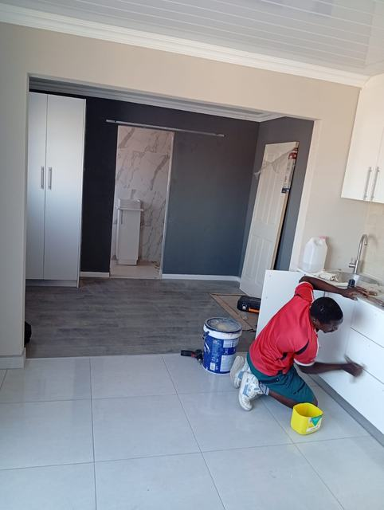
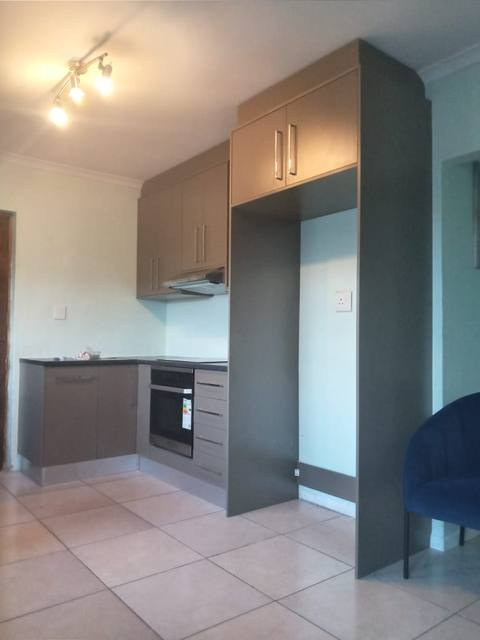
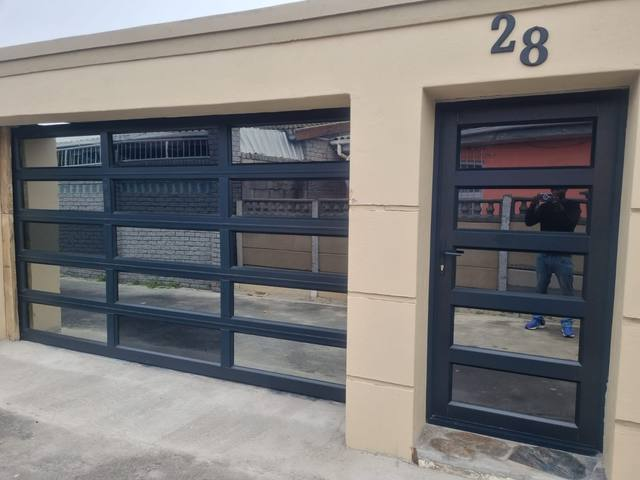

Renovation & woodworks in Langa
Langa has compact family homes and backyard units, where a well-planned kitchenette, cupboards and a tidy bathroom make a big difference. We're often asked for kitchenettes for homes and backyard units, built-in cupboards, and bathroom vanities.
Our work in Langa
Langa first, then more of our work.





Working in Langa
Langa, founded in the 1920s, is Cape Town's oldest township, just beside Pinelands and only minutes from our Maitland workshop. Homes are compact, and many have backyard units and extensions. A well-planned kitchenette, built-in cupboards and a tidy bathroom vanity make the most of small spaces. Our Langa photo shows finishing touches and the clean-up after a job.
Kitchens · Built-in cupboards · Doors & garage doors · Furniture · Decks · Renovations →
Questions from Langa
Do you clean up after a job in Langa?
Always. Every job ends with a full clean-up, so you get your home back ready to use.
Can you fit a kitchenette in a backyard unit?
Yes. We plan compact kitchenettes with storage, a sink and space for appliances.
Do you clean up after the job?
Yes. We remove offcuts, dust and packaging and leave the space clean.
Do you supply bathroom vanities?
Yes. We build vanities to size with moisture-resistant boards and sealed edges.